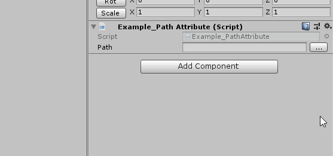

Class PathAttribute
Marks a target string field as a folder path, and automatically provides a button next to the field in the inspector window that opens your system's folder browser
Inheritance
System.Object
System.Attribute
UnityEngine.PropertyAttribute
PathAttribute
Implements
System.Runtime.InteropServices._Attribute
Inherited Members
UnityEngine.PropertyAttribute.order
Namespace: Atlas
Assembly: Atlas.Runtime.dll
Syntax
[AttributeUsage(AttributeTargets.Field, AllowMultiple = false)]
public sealed class PathAttribute : PropertyAttribute, _AttributeExamples

using UnityEngine;
using Path = Atlas.PathAttribute.Path;
using Relativity = Atlas.PathAttribute.Relativity;
namespace Atlas.Examples
{
public sealed class Example_PathAttribute : MonoBehaviour
{
[Header( "Absolute" )]
[SerializeField, Path( Path.File, Relativity.ProjectRelative )]
private string m_filePathAbsolute;
[SerializeField, Path( Path.Directory, Relativity.ProjectRelative )]
private string m_directoryPathAbsolute;
[Header( "Assets-relative" )]
[SerializeField, Path( Path.File, Relativity.AssetsRelative )]
private string m_filePathAssets;
[SerializeField, Path( Path.Directory, Relativity.AssetsRelative )]
private string m_directoryPathAssets;
[Header( "Project-relative" )]
[SerializeField, Path( Path.File, Relativity.ProjectRelative )]
private string m_filePathProject;
[SerializeField, Path( Path.Directory, Relativity.ProjectRelative )]
private string m_directoryPathProject;
}
}
Constructors
| Improve this Doc View SourcePathAttribute(PathAttribute.Path, PathAttribute.Relativity)
Constructor
Declaration
public PathAttribute(PathAttribute.Path pathTargetType = PathAttribute.Path.File, PathAttribute.Relativity relativePath = PathAttribute.Relativity.ProjectRelative)Parameters
| Type | Name | Description |
|---|---|---|
| PathAttribute.Path | pathTargetType | Type of path to use |
| PathAttribute.Relativity | relativePath | Type of path relativity to use |
Properties
| Improve this Doc View SourceRelativePath
A string representing the desired relative path as defined by RelativityType
Declaration
public string RelativePath { get; }Property Value
| Type | Description |
|---|---|
| System.String |
RelativityType
Type of path relativity to use
Declaration
public PathAttribute.Relativity RelativityType { get; }Property Value
| Type | Description |
|---|---|
| PathAttribute.Relativity |
TargetType
Type of path target to represent
Declaration
public PathAttribute.Path TargetType { get; }Property Value
| Type | Description |
|---|---|
| PathAttribute.Path |
Implements
System.Runtime.InteropServices._Attribute